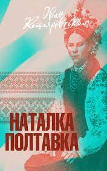
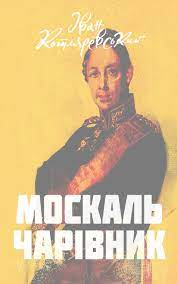
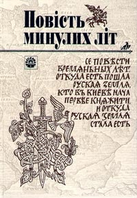
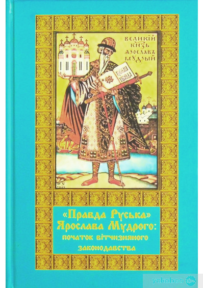
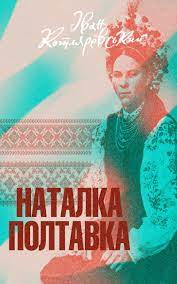
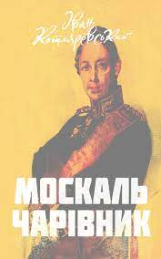
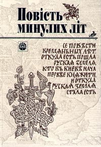
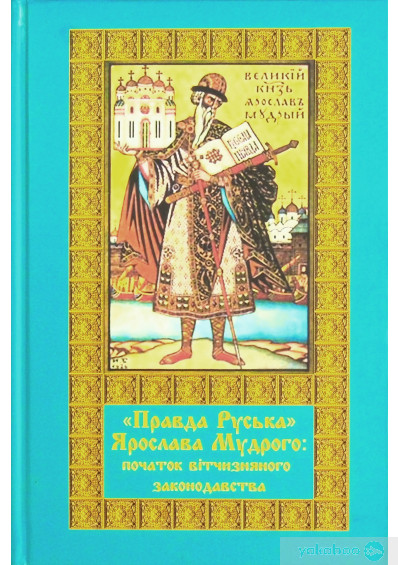

Коли йдеться про виникнення української мови, у свідомості переважної більшості зацікавлених громадян вона часто асоціюється із сучасною літературною мовою, тобто тією, яка щодня звучить по радіо й телебаченню, яку вивчають у школах, якою друкують книжки, газети й часописи і т. ін. Проте слід пам’ятати, що національна мова — це не тільки спільна для всієї нації літературна мова, опрацьована майстрами художнього слова, але й мова народна, що має діалектні відмінності на різних територіях України.
Щодо походження сучасної української літературної мови жодних проблем немає: загальновідомо, що її започаткував І. Котляревський творами «Енеїда», «Наталка Полтавка» та «Москаль-чарівник», а її основоположником став Т. Шевченко. Вони почали писати свої твори народною мовою на основі українських середньонаддніпрянських говорів. До І. Котляревського і Т. Шевченка в Україні були дві літературні мови: церковнослов’янська, запозичена від болгар разом із прийняттям християнства, і староукраїнська писемно-літературна мова (ХІІІ — ХVІІІ ст.). На давній Русі також було дві літературні мови. Поряд з церковнослов’янською виникла на її основі також давньокиївська (інша назва — давньоруська) писемна мова зі значним впливом місцевих мовних особливостей. Її використовували для світських потреб — у державному управлінні, у князівських канцеляріях, літописах, в оригінальних і перекладних художніх творах тощо. Цією мовою були створені «Повість минулих літ», «Слово про Ігорів похід», «Руська Правда» та багато інших.
 
 


 

Після занепаду Київської Русі давньокиївська (давньоруська) мова і далі вживалася на її колишній території, але в українських князівствах вона зазнала ще більших впливів народнорозмовної мови, через що витворився її своєрідний варіант — староукраїнська писемно-літературна мова, що функціонувала в Україні аж до кінця ХVІІІ ст. Отже, цілком зрозуміло, що коли ми говоримо про давність української мови і шукаємо її коріння в глибині століть, ідеться не про її давній або сучасний літературні варіанти, а про народне мовлення, тобто про народні діалекти. Сaме в народному мовленні виникли ті специфічні фонетичні, граматичні й лексичні риси, які згодом стали характерними особливостями української мови. Таким чином, дослідити походження української мови — це насамперед з’ясувати послідовність, місце і час виникнення окремих українських діалектних рис, що поступово склали специфічну мовну систему, середньонаддніпрянський варіант якої став основою сучасної української літературної мови.
Поява будь-якої мови — це не подія, а тривалий процес, що відбувається протягом кількох століть. Оскільки мова є невід’ємною ознакою етносу, вона формується разом з відповідним етносом. Встановлення науковими методами віку етносу, як і будь-якого суспільно-історичного явища (держави, міста, культурно-історичного регіону тощо) передбачає необхідність довести неперервність його життя від припущуваного часу його виникнення. Сaме завдяки неперервності етнокультурного розвитку зберігається генетичний зв’язок між окремими фазами розвитку культури та мови даного етносу протягом усього його життя.
Науково доведена й підтверджена безсумнівними археологічними матеріалами неперервність розвитку матеріальної культури на протоукраїнських землях приблизно від VІ ст. н. е., тобто за останні 1500 років. Отже, й історію українців як окремого етносу та української мови є підстави починати від середини І тис. н. е.
Входження праукраїнської етномовної території до слов’янської прабатьківщини спричинилося до того, що українська мова увібрала в себе значну частину праслов’янської мовної спадщини, яка в інших слов’янських мовах відображена меншою мірою або й зовсім зникла. У протоукраїнських діалектах протягом VІ—ІХ ст. виникло в різний час чимало інших специфічно українських або українсько-білоруських, менше — українсько-російських діалектних особливостей, деякі з них — під впливом інших мов. Цей процес тривав і в епоху Київської Русі, і в наступний період — від ХІV ст. і далі. У ході суспільно-економічного і культурно-політичного розвитку різних українських земель тривало дальше зближення окремих регіонів і консолідація їхнього населення, що завершилося утворенням української народності, а потім і нації.